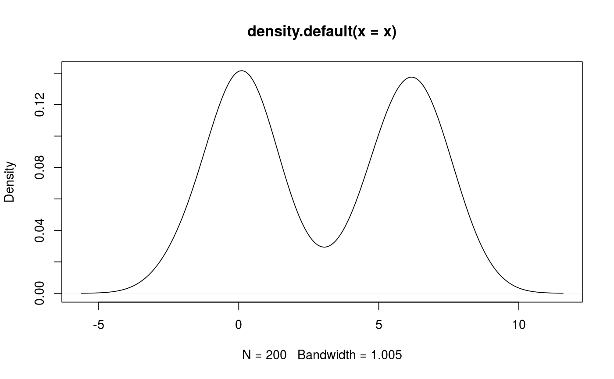

R/density.R
distributions.RdDefine a distribution for PSA parameters.
normal(mean, sd) lognormal(mean, sd, meanlog, sdlog) gamma(mean, sd) binomial(prob, size) multinomial(...) logitnormal(mu, sigma) beta(shape1, shape2) triangle(lower, upper, peak = (lower + upper)/2) poisson(mean) define_distribution(x) beta(shape1, shape2) triangle(lower, upper, peak = (lower + upper)/2) use_distribution(distribution, smooth = TRUE)
| mean | Distribution mean. |
|---|---|
| sd | Distribution standard deviation. |
| meanlog | Mean on the log scale. |
| sdlog | SD on the log scale. |
| prob | Proportion. |
| size | Size of sample used to estimate proportion. |
| ... | Dirichlet distribution parameters. |
| mu | Mean on the logit scale. |
| sigma | SD on the logit scale. |
| shape1 | for beta distribution |
| shape2 | for beta distribution |
| lower | lower bound of triangular distribution. |
| upper | upper bound of triangular distribution. |
| peak | peak of triangular distribution. |
| x | A distribution function, see details. |
| distribution | A numeric vector of observations defining a distribution, usually the output from an MCMC fit. |
| smooth | Use gaussian kernel smoothing? |
These functions are not exported, but only used
in define_psa(). To specify a user-made
function use define_distribution().
use_distribution() uses gaussian kernel
smoothing with a bandwith parameter calculated
by stats::density(). Values for unobserved
quantiles are calculated by linear
interpolation.
define_distribution() takes as argument a
function with a single argument, x,
corresponding to a vector of quantiles. It
returns the distribution values for the given
quantiles. See examples.
#> [[1]] #> function (x) #> stats::qexp(p = x, rate = 0.5) #> <environment: 0x555bf65c6b50> #>use_distribution(x)#> [[1]] #> function (x) #> { #> if (smooth) { #> noise <- stats::rnorm(n = length(x), mean = 0, sd = stats::density(distribution)$bw) #> } #> else { #> noise <- 0 #> } #> (stats::approxfun(x = seq(0, 1, length = length(distribution)), #> y = distribution))(x) + noise #> } #> <environment: 0x555bf058b7b8> #>